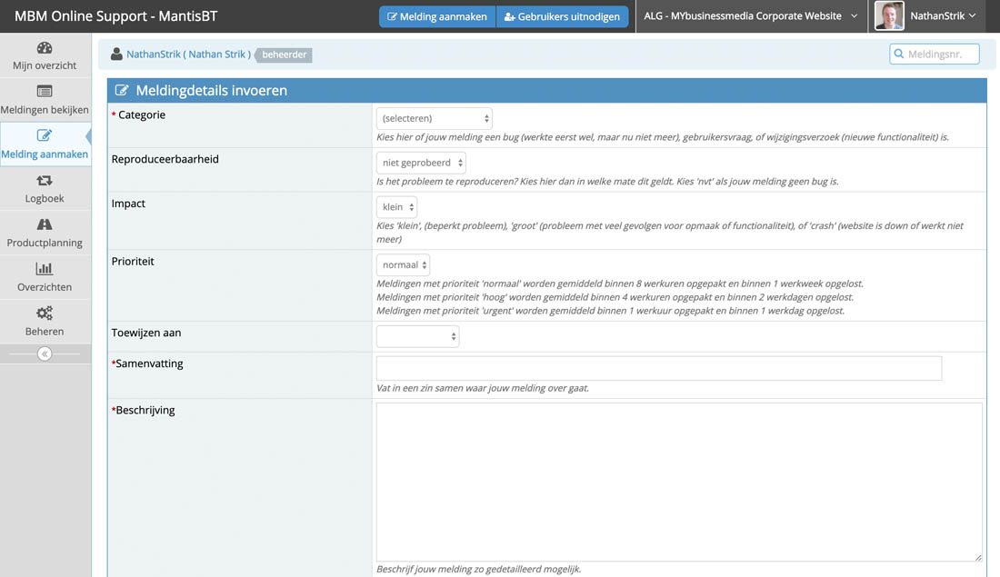
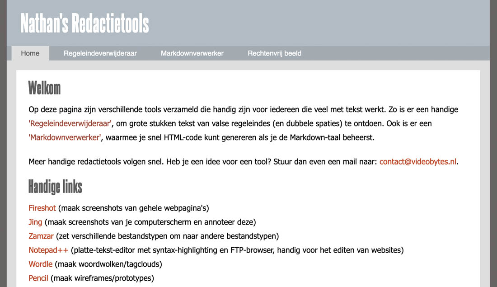

Over mij
Over mij en mijn werk
Over mij in het kort...
Ik heb jarenlang met veel plezier als webredacteur gewerkt bij de publieke omroep en in de uitgeefwereld. De laatste twee jaar heb ik mijn koers met veel plezier verlegd richting web-ontwikkeling. Zozeer zelfs dat ik een nieuwe passie ontdekt heb. Ik ben nu druk op zoek naar manieren om mijn kennis over software engineering te vergroten en mijzelf echt toe te leggen op (web)applicatie-ontwikkeling.
Hieronder een kleine greep uit projecten waar ik trots op ben. Nieuwsgierig? Check dan ook mijn CV!
Supporttool
Mantis-implementatie
Inrichten van Mantis bugtracking-tool voor intern gebruik bij MYbusinessmedia.
Redactietools
Workflow-verbeteringen
Opzetten van een website met tips en workflow-tools voor redactioneel gebruik.